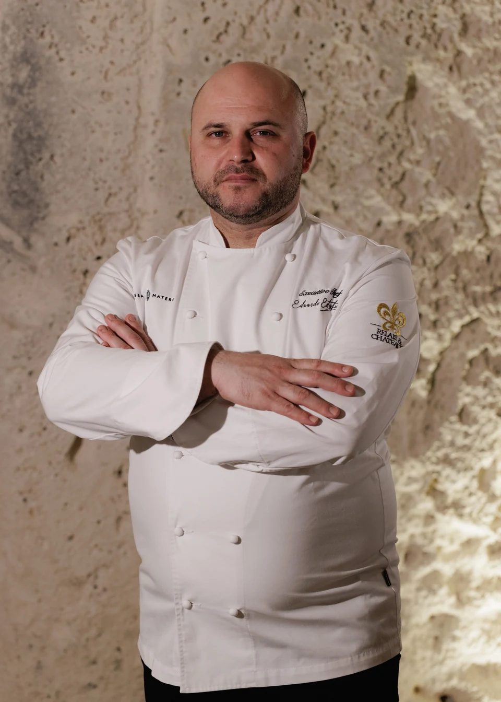
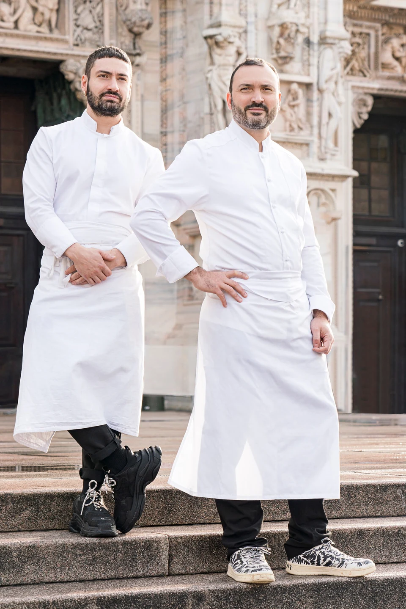

Incontri a tavola · Artema · Vetera Matera
GESTI: le radici, nuovi incontri.
Eduardo Estatico e Remo Capitaneo ad Artema, per l’appuntamento conclusivo di GESTI 2026.
Evento del · Matera, Italia

L’appuntamento del 29 settembre 2026 chiude GESTI, la rassegna di Artema, ristorante gastronomico di Vetera Matera. Eduardo Estatico incontra Remo Capitaneo, chef di Verso a Milano, per una cena a quattro mani nel cuore dei Sassi.
Il Sud come punto di partenza
Campania, Basilicata e Puglia attraversano il menu. Le origini dei due chef si intrecciano con le esperienze maturate altrove, lasciando spazio a interpretazioni personali della materia prima e della stagione.
Il percorso annunciato affianca ingredienti e riferimenti del Mezzogiorno a preparazioni nate dalla ricerca dei due cuochi. Un confronto che porta a Matera sensibilità differenti, unite dalla disponibilità allo scambio.


L’incontro conclude un’edizione che ha coinvolto anche Enrico Bartolini, Floriano Pellegrino e Isabella Potì, con l’ospitalità di Artema come filo comune.
Immagini pubblicate da Falstaff nell’articolo dedicato all’evento. Credito originale: «Foto fornita».
Fonte e approfondimento: Falstaff